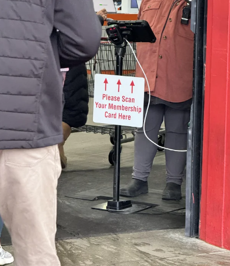
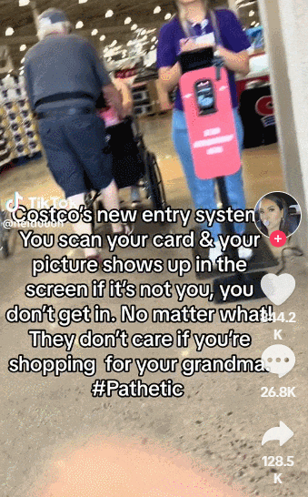

Costco自推出进门"刷脸验人"的新政策以来，大批顾客怨声载道。
图源：DailyDot
为了有效拦截非会员消费者，Costco正在门店的入口处安装会员卡扫描仪。顾客进门时必须向读卡器出示会员卡，然后顾客的照片就会出现在平板电脑的屏幕上，并由员工验证身份，以确保是本人。
根据早前报道，安省部分门店已开始实施这项新政策。
图源：Reddit
然而，这项新政策自施行以来一直饱受争议。
近日，一段由TikToker@neiduuuh发布的"严厉批评Costco新政策"的视频在社交媒体上引起疯传，观看量高达1,670万次。
这段时长6秒的视频以Costco入口处的画面开始，显示门口安装了一个配有身份证扫描仪的"检查站"，告示牌子上用醒目的大字提醒顾客"在此扫描会员卡"（scan membership here），旁边还有一名员工盯着。
图源：TikTok
视频中的字幕详细说明了为什么发布者认为这项新的严格政策存在问题。她写道："Costco的新入口系统。你要扫描你的会员卡，然后你的照片会显示在屏幕上，如果不是本人，连门都进不去，无论你有什么理由！他们才不管你是不是在帮你奶奶买东西。#可悲"
发布者在帖子的标题中写道，她对新的政策非常不满，因此决定再也不去Costco了。
事实上，这位TikToker并不是第一个在网上抱怨Costco新政策的人。
一位女士说，由于进门要刷脸验人，她无法为住院的母亲买东西。
还有人说，即使是会员本人也可能遇到难题，比如本人和照片可能存在差异，他们很难说服员工他们就是照片上的人，这不必要地耽误了他们的购物体验。
尽管许多人都在抱怨Costco的会员制度，但这一做法为该公司带来了大量收入。根据Statista的数据，从2014年到2023年，Costco会员人数从7,640万增加到了1.279亿。
Retail Brew指出，Costco近四分之三的利润直接来自会员费。仅在2023年就获得了惊人的"43亿元收入，占其63亿元总收入的72%"。
一些顾客支持新政策
一些网友似乎并不太同情那些想用其他人的会员卡享受Costco优惠价格的人。
一条评论写道：“给你奶奶买点东西？哥们，自己去办张会员卡吧。”
另一条评论写道："用户协议明确规定会员资格不可转让。会员规则上就写明必须是持卡人，一直都是这样。"
还有一条评论写道，在这一问题上，他们实际上是站在Costco一边。"Costco之所以能在店内提供如此优惠的商品，是因为他们的大部分收入都来自会员费。如果把一张会员卡当邀请函一样发放，他们如何盈利？"
还有人写道："在这一点上我和Costco站在同一阵线。我们当地的Costco商店总是人满为患，我几乎挤不进去，但现在这里的人少了，空间大了，也安静了。"
对于Costco的新政策，你怎么看？
Costco自推出进门”刷脸验人”的新政策以来，大批顾客怨声载道。
图源：DailyDot
为了有效拦截非会员消费者，Costco正在门店的入口处安装会员卡扫描仪。顾客进门时必须向读卡器出示会员卡，然后顾客的照片就会出现在平板电脑的屏幕上，并由员工验证身份，以确保是本人。
根据早前报道，安省部分门店已开始实施这项新政策。

图源：Reddit
然而，这项新政策自施行以来一直饱受争议。
近日，一段由TikToker@neiduuuh发布的”严厉批评Costco新政策”的视频在社交媒体上引起疯传，观看量高达1,670万次。
这段时长6秒的视频以Costco入口处的画面开始，显示门口安装了一个配有身份证扫描仪的”检查站”，告示牌子上用醒目的大字提醒顾客”在此扫描会员卡”（scan membership here），旁边还有一名员工盯着。

图源：TikTok
视频中的字幕详细说明了为什么发布者认为这项新的严格政策存在问题。她写道：”Costco的新入口系统。你要扫描你的会员卡，然后你的照片会显示在屏幕上，如果不是本人，连门都进不去，无论你有什么理由！他们才不管你是不是在帮你奶奶买东西。#可悲”
发布者在帖子的标题中写道，她对新的政策非常不满，因此决定再也不去Costco了。
事实上，这位TikToker并不是第一个在网上抱怨Costco新政策的人。
一位女士说，由于进门要刷脸验人，她无法为住院的母亲买东西。
还有人说，即使是会员本人也可能遇到难题，比如本人和照片可能存在差异，他们很难说服员工他们就是照片上的人，这不必要地耽误了他们的购物体验。
尽管许多人都在抱怨Costco的会员制度，但这一做法为该公司带来了大量收入。根据Statista的数据，从2014年到2023年，Costco会员人数从7,640万增加到了1.279亿。
Retail Brew指出，Costco近四分之三的利润直接来自会员费。仅在2023年就获得了惊人的”43亿元收入，占其63亿元总收入的72%”。
一些顾客支持新政策
一些网友似乎并不太同情那些想用其他人的会员卡享受Costco优惠价格的人。
一条评论写道：“给你奶奶买点东西？哥们，自己去办张会员卡吧。”
另一条评论写道：”用户协议明确规定会员资格不可转让。会员规则上就写明必须是持卡人，一直都是这样。”
还有一条评论写道，在这一问题上，他们实际上是站在Costco一边。”Costco之所以能在店内提供如此优惠的商品，是因为他们的大部分收入都来自会员费。如果把一张会员卡当邀请函一样发放，他们如何盈利？”
还有人写道：”在这一点上我和Costco站在同一阵线。我们当地的Costco商店总是人满为患，我几乎挤不进去，但现在这里的人少了，空间大了，也安静了。”
对于Costco的新政策，你怎么看？